Part A: Image Warping and Mosaicing
1. Shoot the Pictures
I took photos of two sets of panoramas. In each set, the camera was held in the same position, but rotated, ensuring that the center of projection did not change. This allows us to compute the perspective projection (homography) between the two images. I varied the amount of overlap across the two sets to see its effects on the final mosaic.Oxford Street Panoramic
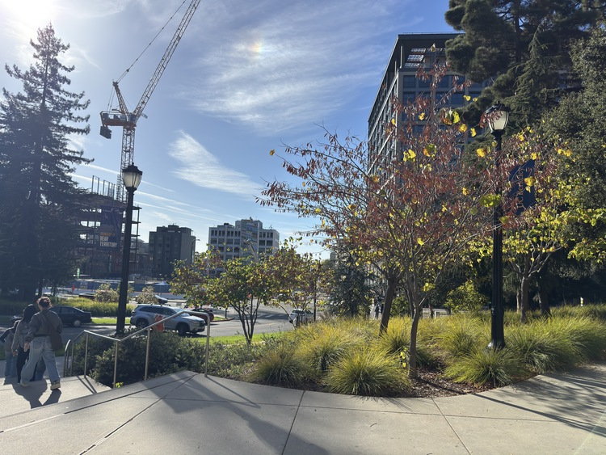
Oxford St | Image 1
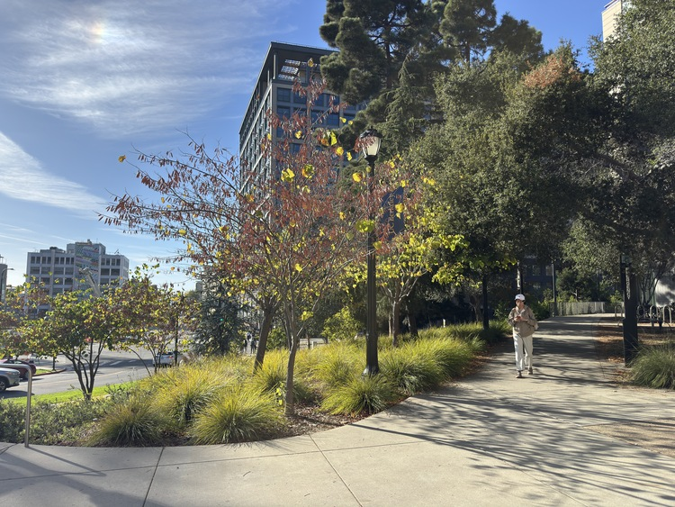
Oxford St | Image 2
University Street Panorama
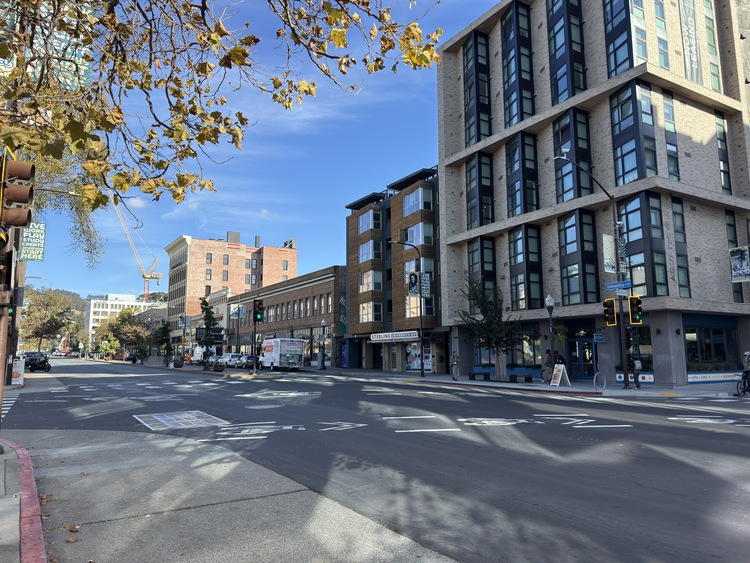
University St | Image 1
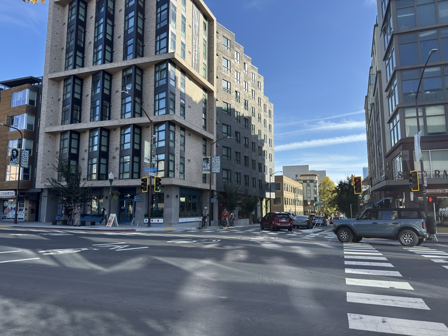
University St | Image 2
2. Recover Homographies
Using the provided tool from a previous semester, I selected matching points between the two images across both panoramic pairs. These selections are visualized below. The transformation from some point \( (x, y) \) in image 1 to \( (u, v) \) in image 2 can be described as \[ \begin{bmatrix} h_{11} & h_{12} & h_{13} \\ h_{21} & h_{22} & h_{23} \\ h_{31} & h_{32} & h_{33} \\ \end{bmatrix} \begin{bmatrix} x \\ y \\ 1 \end{bmatrix} = \begin{bmatrix} wu \\ wv \\ w \end{bmatrix} \] From this matrix, we can reduce it to a system of linear equations to eliminate the scaling factor \( w \). In addition, we fix \( h_{33} \) to 1, giving us: \[ \begin{bmatrix} x & y & 1 & 0 & 0 & 0 & -ux & -uy \\ 0 & 0 & 0 & x & y & 1 & -vx & -vy \end{bmatrix} \begin{bmatrix} h11 \\ h12 \\ h13 \\ h21 \\ h22 \\ h23 \\ h31 \\ h32 \end{bmatrix} = \begin{bmatrix} u \\ v \end{bmatrix} \]Oxford Street Panoramic
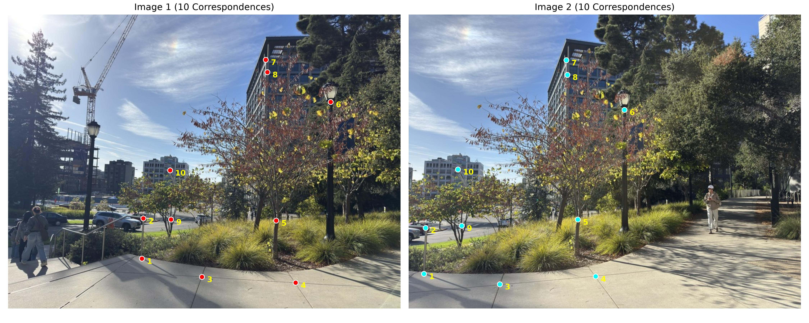
University Street Panorama
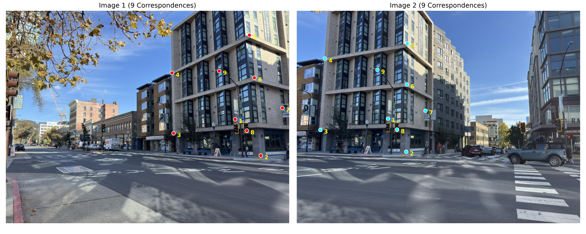
3. Image Warping
The first step in validating the homography derivation was to use a test image. Using an angled picture of a painting, I projected it onto a rectangle, matching the paintings corners to the coordinates [(0, 0), (1, 0), (1, 1), (0, 1)]. The result of this homography is shown below, both cropped and uncropped. We can see that billinear interpolation looks smoother as compared to nearest neighbors.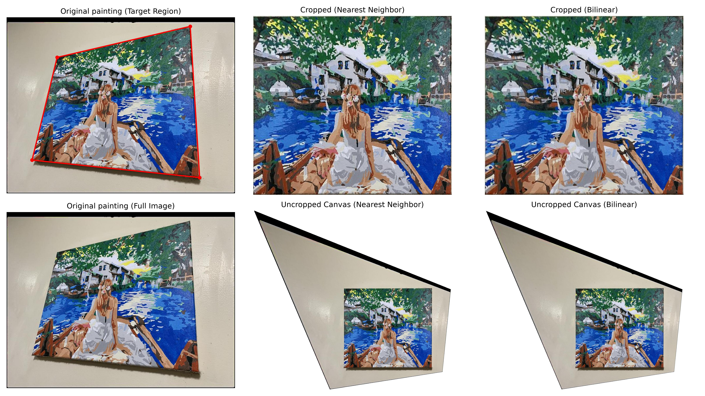
Painting Rectification
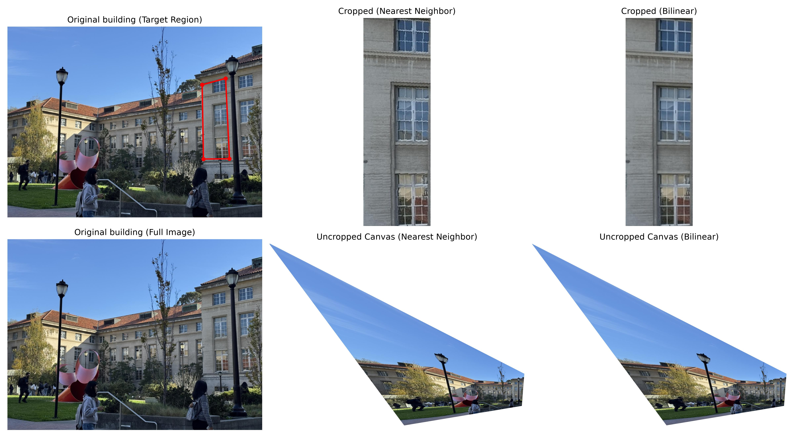
Building Rectification
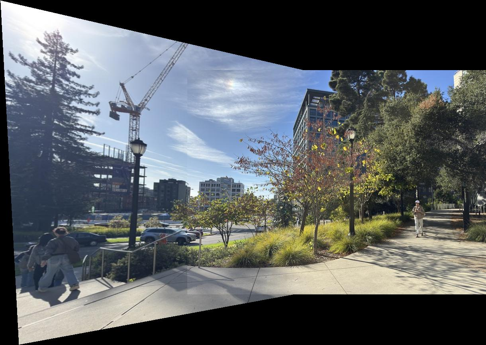
Oxford St Rectification
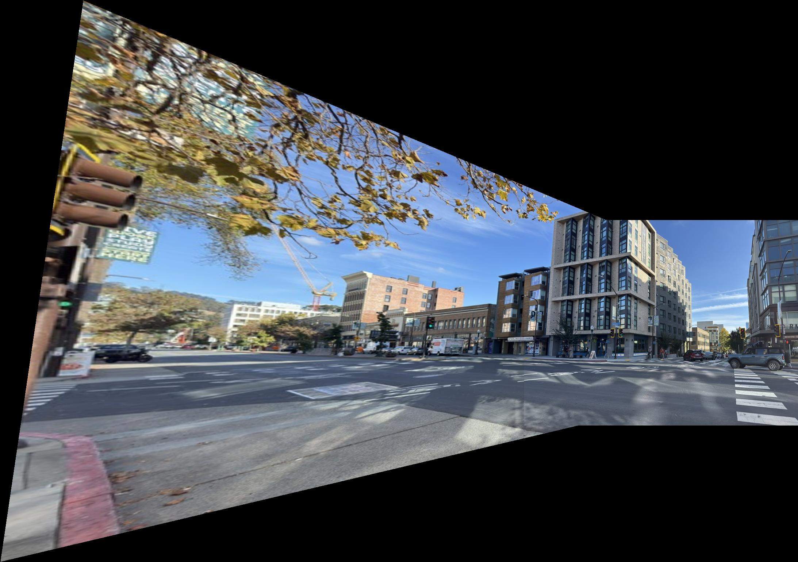
University St Rectification
4. Blending the Image into Mosaics
With the rectification complete, the final step to stich these images together was to blend them together. To do this, I used weighted averages, with the weight being the distance from the image border. This meant that center pixels had a higher weight, while pixels near the edge had a lower weight. This mask was also transformed by the homography, and then for each pixel on the final image, a normalized weighted average was used to compute the final pixel value.The source images, their unblended rectification, and their blended products are shown below. The UT Tower mosaic found online has a clear seam due to the lighting differences. However, the two panoramas I took did not have these issues, so I did not pursue a Laplacian pyramid blending scheme. Another interesting observation was how the percentage overlap between the two mosaics I took affects the dimensions of the final stich. As overlap decreases, the projection becomes more 'steep', resulting in one of the images being skewed and stretched much as compared to the Oxford street mosaic.
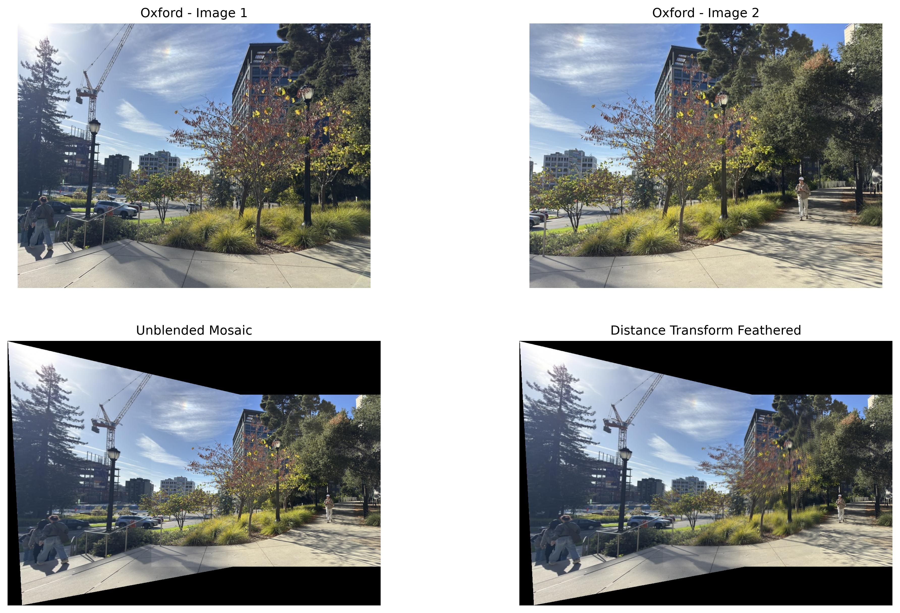
Oxford St Blended Mosaic
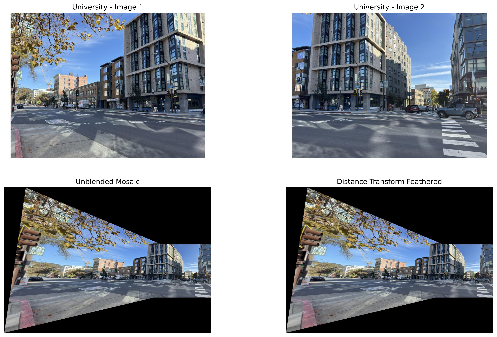
University St Blended Mosaic

UT Tower (online image)